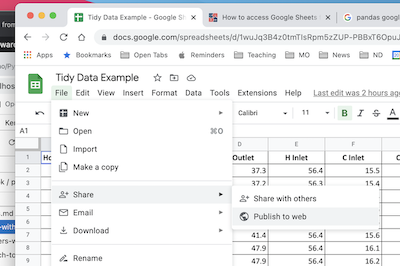

Tidy Data and Pandas
Contents
1. Tidy Data and Pandas¶
Pandas is the most popular and widely used Python library for data wrangling and analysis. Developed just over 10 years ago in the financial services industry, pandas is now included in all major distributions of Python and has become a mainstay for doing data analysis in Python.
Tidy Data is a small set a of core principles to streamline analysis and coding by organizing data into tables with a simple and standardized structure. Tidy Data is highly intuitive and well suited to Pandas. Keeping data organized following “Tidy Data” principles means less time wrangling data, short and clear Python code for analysis, and more time to capture good data and gain insight..
The purpose of this notebook is to get you started using Pandas with Tidy Data. Pandas is a full featured library capable of handling complex applications. In the spirit of the 80/20 rule (i.e., Pareto principle), the goal here is to introduce just enough of the pandas library to handle routine data analysis tasks.
Some useful references:
1.1. Tidy Data¶
The KonMari Method™ is not a quick fix for a messy room or a once-in-a-while approach to tidying. It’s a chance to reset your entire life – but only if you commit to following its principles. – Marie Kondo
Data acquired in process applications generally consists of repeated observation of a set of process variables. The values are usually numbers, such as temperature or pressure, but can also be strings, integers, or categorical data indicating the status of equipment or alarms.
We assume data from repeated observations is arranged in tabular form in data files. Each distinct experiment, treatment, or unit of data is located in a separate file.
Every column of a data file holds all data for a unique variable.
Every row of a data file is an observation.
Every cell contains a single value.
 Figure Source: Figure 12.1 from R for Data Science (Hadley Wickham & Garrett Grolemund)
Figure Source: Figure 12.1 from R for Data Science (Hadley Wickham & Garrett Grolemund)
These assumptions are the “Tidy Data” principles popularized by Hadley Wickham, and closely related to concepts underlying relational databases. Tiny Data assigns meaning to the structure of the data ffile, which significantly streamlines subsequenct coding and analysis. Hart, et al., provide excellent contrasting examples of tidy and messy data.
These notes assume data is stored in data files organized using “Tiny Data” principles. If your data isn’t organized like this, the procedures described by Wickham may help reorgnize your data for more efficient analysis.
1.2. Reading Tidy Data¶
We assume data is organized by Tidy Data principles for the rest of this notebook, with each data set corresponding to an experiment or other clearly defined collection of observations.
1.2.1. From .csv files¶
For files stored in .csv format, a pandas DataFrame object is created with the read_csv(data_file). data_file is a string containing a url or the name of a local file. read_csv() function has many optional arguments, but for simple cases the path to the data file is often enough to do the job.
import pandas as pd
data_file = "https://raw.githubusercontent.com/jckantor/cbe30338-book/main/notebooks/data/tclab-data-example.csv"
df = pd.read_csv(data_file)
display(df)
| Time | T1 | T2 | Q1 | Q2 | |
|---|---|---|---|---|---|
| 0 | 0.00 | 21.543 | 20.898 | 50.0 | 0.0 |
| 1 | 1.00 | 21.543 | 20.898 | 50.0 | 0.0 |
| 2 | 2.01 | 21.543 | 20.898 | 50.0 | 0.0 |
| 3 | 3.01 | 21.543 | 20.931 | 50.0 | 0.0 |
| 4 | 4.00 | 21.543 | 20.931 | 50.0 | 0.0 |
| ... | ... | ... | ... | ... | ... |
| 796 | 796.00 | 58.281 | 37.656 | 50.0 | 0.0 |
| 797 | 797.01 | 58.120 | 37.656 | 50.0 | 0.0 |
| 798 | 798.01 | 58.378 | 37.560 | 50.0 | 0.0 |
| 799 | 799.00 | 58.281 | 37.624 | 50.0 | 0.0 |
| 800 | 800.01 | 58.668 | 37.592 | 50.0 | 0.0 |
801 rows × 5 columns
1.2.2. From Google Sheets¶
Google sheets are a convenient to collect and share data. There is a complete API and libraries to enable full, authenticated, read/write access to Google Sheets.
But if the data is not confidential and can be temporarilty published to the web for public access, then it takes just a few steps and one line of Python to read the data as pandas DataFrame.
The first step is publish the sheet to the web. In Google Sheets, select “File > Share > Publish to the Web”.

In the dialog box, choose the “Link” tab. Locate the drop-down menus, then select the sheet to be published and “Comma-seperated values (.csv)” format. Click “Publish”.
After confirming the choice to publish, a link url will appear. This url can be treat as a link to a .csv file. Use .read_csv() to create a pandas dataframe.
Copy the url into the following cell to complete the operation.
sheet_url = "https://docs.google.com/spreadsheets/d/e/2PACX-1vSNUCEFMaGZ-y18p-AnDoImEeenMLbRxXBABwFNeP8I3xiUejolPJx-kr4aUywD0szRel81Kftr8J0R/pub?gid=865146464&single=true&output=csv"
hx = pd.read_csv(sheet_url)
hx
| Flow Rate H | Flow Rate C | Trial # | Hot Flow (L/hr) | Cold Flow (L/hr) | Time | H Outlet | H Inlet | C Inlet | C Outlet | |
|---|---|---|---|---|---|---|---|---|---|---|
| 0 | H | H | 1 | 651 | 798 | 32:08.1 | 37.3 | 56.4 | 15.5 | 30.8 |
| 1 | H | H | 1 | 651 | 798 | 32:07.8 | 37.2 | 56.3 | 15.4 | 30.8 |
| 2 | H | H | 1 | 651 | 798 | 32:07.6 | 37.2 | 56.3 | 15.4 | 30.8 |
| 3 | H | M | 2 | 650 | 512 | 29:13.0 | 41.4 | 56.4 | 15.6 | 34.7 |
| 4 | H | M | 2 | 650 | 512 | 29:12.3 | 41.4 | 56.4 | 15.6 | 34.7 |
| 5 | H | M | 2 | 650 | 512 | 29:12.1 | 41.4 | 56.4 | 15.6 | 34.7 |
| 6 | H | L | 3 | 655 | 201 | 26:17.3 | 47.9 | 56.4 | 16.1 | 42.3 |
| 7 | H | L | 3 | 655 | 201 | 26:17.1 | 47.9 | 56.4 | 16.2 | 42.3 |
| 8 | H | L | 3 | 655 | 201 | 26:16.8 | 47.9 | 56.4 | 16.2 | 42.3 |
| 9 | M | H | 4 | 503 | 795 | 20:22.3 | 34.5 | 56.4 | 15.5 | 29.1 |
| 10 | M | H | 4 | 503 | 795 | 20:22.1 | 34.5 | 56.4 | 15.5 | 29.1 |
| 11 | M | H | 4 | 503 | 795 | 20:21.8 | 34.5 | 56.4 | 15.5 | 29.1 |
| 12 | M | M | 5 | 500 | 498 | 18:25.1 | 38.6 | 56.4 | 15.8 | 32.9 |
| 13 | M | M | 5 | 500 | 498 | 18:24.8 | 38.6 | 56.4 | 15.8 | 33.0 |
| 14 | M | M | 5 | 500 | 498 | 18:24.6 | 38.7 | 56.4 | 15.8 | 33.0 |
| 15 | M | L | 6 | 502 | 199 | 15:05.3 | 45.8 | 56.2 | 16.2 | 41.3 |
| 16 | M | L | 6 | 502 | 199 | 15:05.1 | 45.8 | 56.2 | 16.2 | 41.3 |
| 17 | M | L | 6 | 502 | 199 | 15:04.8 | 45.8 | 56.2 | 16.2 | 41.3 |
| 18 | L | H | 7 | 205 | 801 | 10:02.8 | 25.2 | 55.0 | 15.4 | 23.2 |
| 19 | L | H | 7 | 205 | 801 | 10:02.6 | 25.2 | 55.1 | 15.4 | 23.2 |
| 20 | L | H | 7 | 205 | 801 | 10:02.3 | 25.2 | 55.1 | 15.4 | 23.2 |
| 21 | L | M | 8 | 204 | 500 | 07:06.6 | 28.5 | 55.0 | 15.6 | 26.5 |
| 22 | L | M | 8 | 204 | 500 | 07:06.3 | 28.5 | 55.0 | 15.6 | 26.5 |
| 23 | L | M | 8 | 204 | 500 | 07:06.1 | 28.5 | 55.0 | 15.6 | 26.5 |
1.2.3. From Python¶
Pandas dataframes can be created directly in Python. Here we demonstrate use of a Python dictionary to create a dataframe with data for variables computed as numpy arrays.
import numpy as np
t = np.linspace(0, 10, 201)
s = np.sin(t)
c = np.cos(t)
df_np = pd.DataFrame({"time": t, "sin": s, "cos": c})
df_np
| time | sin | cos | |
|---|---|---|---|
| 0 | 0.00 | 0.000000 | 1.000000 |
| 1 | 0.05 | 0.049979 | 0.998750 |
| 2 | 0.10 | 0.099833 | 0.995004 |
| 3 | 0.15 | 0.149438 | 0.988771 |
| 4 | 0.20 | 0.198669 | 0.980067 |
| ... | ... | ... | ... |
| 196 | 9.80 | -0.366479 | -0.930426 |
| 197 | 9.85 | -0.412523 | -0.910947 |
| 198 | 9.90 | -0.457536 | -0.889191 |
| 199 | 9.95 | -0.501405 | -0.865213 |
| 200 | 10.00 | -0.544021 | -0.839072 |
201 rows × 3 columns
1.3. Accessing Data¶
The core object in pandas is the DataFrame. For “Tidy Data”, a DataFrame will be collection of columns, each column containing observations of a single, unique variable. Each row is one observation of all variables.
The index assigns a unique label to each row/observation.
df.index
RangeIndex(start=0, stop=801, step=1)
The names of the columns are given by .columns.
df.columns
Index(['Time', 'T1', 'T2', 'Q1', 'Q2'], dtype='object')
Each column forms a Series comprised of all observations of a variable. There are several common ways to access the data series for a variable. These produce the same result.
df["T1"]df.T1df.loc[:, "T1"]
Which you choose depends on situation and context.
df["T1"]
0 21.543
1 21.543
2 21.543
3 21.543
4 21.543
...
796 58.281
797 58.120
798 58.378
799 58.281
800 58.668
Name: T1, Length: 801, dtype: float64
The .loc[row, column] is used to extract slices of the dataframe. A single value is accessed by row index and column label.
df.loc[3, "T1"]
21.543
To extract values for multiple variables from a single observation.
df.loc[3, ["T1", "T2"]]
T1 21.543
T2 20.931
Name: 3, dtype: float64
To extract a range of observations of one or more variables.
df.loc[3:5, ["T1", "T2"]]
| T1 | T2 | |
|---|---|---|
| 3 | 21.543 | 20.931 |
| 4 | 21.543 | 20.931 |
| 5 | 21.543 | 20.931 |
Observations can be selected by conditions.
df[(df.Time >= 100) & (df.Time <= 110)]
| Time | T1 | T2 | Q1 | Q2 | |
|---|---|---|---|---|---|
| 100 | 100.01 | 36.367 | 22.929 | 50.0 | 0.0 |
| 101 | 101.00 | 36.399 | 23.090 | 50.0 | 0.0 |
| 102 | 102.01 | 36.689 | 23.154 | 50.0 | 0.0 |
| 103 | 103.01 | 36.689 | 23.154 | 50.0 | 0.0 |
| 104 | 104.01 | 37.012 | 23.187 | 50.0 | 0.0 |
| 105 | 105.01 | 37.012 | 23.154 | 50.0 | 0.0 |
| 106 | 106.00 | 37.173 | 23.154 | 50.0 | 0.0 |
| 107 | 107.00 | 37.334 | 23.187 | 50.0 | 0.0 |
| 108 | 108.00 | 37.398 | 23.380 | 50.0 | 0.0 |
| 109 | 109.01 | 37.656 | 23.412 | 50.0 | 0.0 |
| 110 | 110.00 | 37.656 | 23.412 | 50.0 | 0.0 |
1.4. Visualizing Data¶
Pandas provides convenient tools for displaying data in tabular and graphical formats.
1.4.1. Tabular Display¶
The quickest way to display a dataframe as a table is with display(). Additional styling and formating options are available through a dataframe’s .style property.
display(df)
| Time | T1 | T2 | Q1 | Q2 | |
|---|---|---|---|---|---|
| 0 | 0.00 | 21.543 | 20.898 | 50.0 | 0.0 |
| 1 | 1.00 | 21.543 | 20.898 | 50.0 | 0.0 |
| 2 | 2.01 | 21.543 | 20.898 | 50.0 | 0.0 |
| 3 | 3.01 | 21.543 | 20.931 | 50.0 | 0.0 |
| 4 | 4.00 | 21.543 | 20.931 | 50.0 | 0.0 |
| ... | ... | ... | ... | ... | ... |
| 796 | 796.00 | 58.281 | 37.656 | 50.0 | 0.0 |
| 797 | 797.01 | 58.120 | 37.656 | 50.0 | 0.0 |
| 798 | 798.01 | 58.378 | 37.560 | 50.0 | 0.0 |
| 799 | 799.00 | 58.281 | 37.624 | 50.0 | 0.0 |
| 800 | 800.01 | 58.668 | 37.592 | 50.0 | 0.0 |
801 rows × 5 columns
For development it is often enough to view just the first few rows or last few rows of a dataframe. The dataframe methods .head() and .tail() provide this service.
df.head(5)
| Time | T1 | T2 | Q1 | Q2 | |
|---|---|---|---|---|---|
| 0 | 0.00 | 21.543 | 20.898 | 50.0 | 0.0 |
| 1 | 1.00 | 21.543 | 20.898 | 50.0 | 0.0 |
| 2 | 2.01 | 21.543 | 20.898 | 50.0 | 0.0 |
| 3 | 3.01 | 21.543 | 20.931 | 50.0 | 0.0 |
| 4 | 4.00 | 21.543 | 20.931 | 50.0 | 0.0 |
df.tail(5)
| Time | T1 | T2 | Q1 | Q2 | |
|---|---|---|---|---|---|
| 796 | 796.00 | 58.281 | 37.656 | 50.0 | 0.0 |
| 797 | 797.01 | 58.120 | 37.656 | 50.0 | 0.0 |
| 798 | 798.01 | 58.378 | 37.560 | 50.0 | 0.0 |
| 799 | 799.00 | 58.281 | 37.624 | 50.0 | 0.0 |
| 800 | 800.01 | 58.668 | 37.592 | 50.0 | 0.0 |
1.4.2. Plotting¶
An extensive variety of plots can be constructed using a dataframe’s .plot() method. Many of the usual Matploblib plotting commands can be accessed through options passed to .plot(). For many routine applications, a single call of a dataframe’s .plot() method can replace many lines of Python code using Matplotlib.
For example, to plot all observations for a single variable.
df.T1.plot()
<AxesSubplot:>
The .plot() method will often be used to plot one or more variables on the vertical ‘y’ axis as a function of another variable on the horizontal ‘x’ axes. Additional options specify line styles, grid, labels, titles, and much more.
df.plot("Time", ["T1", "T2"], style={"T1":'rx', "T2":'g'}, lw=2, ms=3,
ylabel="deg C", title="TC Lab", grid=True)
<AxesSubplot:title={'center':'TC Lab'}, xlabel='Time', ylabel='deg C'>
df.plot(x = "Time", y=["T1", "T2"], subplots=True, figsize=(10, 2), grid=True, layout=(1, 2))
array([[<AxesSubplot:xlabel='Time'>, <AxesSubplot:xlabel='Time'>]],
dtype=object)

df[(df.Time > 570) & (df.Time < 680)].plot(x="Time", y="T1", figsize=(12, 5), style={"T1":"s:"}, grid=True)
<AxesSubplot:xlabel='Time'>
1.4.3. Scatter Plots¶
df.plot.scatter(x = "T1", y = "T2")
<AxesSubplot:xlabel='T1', ylabel='T2'>
1.4.4. Statistical Plots¶
df[["T1", "T2"]].hist(bins=30, figsize=(10, 3))
array([[<AxesSubplot:title={'center':'T1'}>,
<AxesSubplot:title={'center':'T2'}>]], dtype=object)
1.5. Concluding Remarks¶
Learning Pandas and data analysis is like learning to ride a bicycle. Once you have the enough knowledge to get going, the next steps are about practice and learning by doing.
This notobook provides basic knowledge to the use of pandas for data analysis for engineering applications. With Tidy Data principles, data analysis can be streamlined and intuitive. The next steps are to put these tools work on your data analaysis tasks, and explore other elements of the pandas library that can be useful in your work.